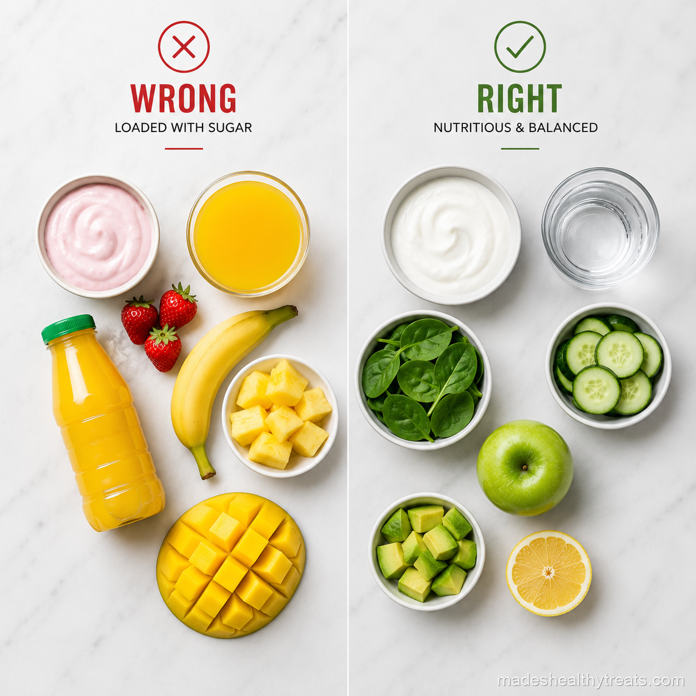

The Smoothie Mistakes I Had To Learn The Funny Way
I have made almost every smoothie mistake possible, usually while feeling very confident and very wrong. My earliest smoothies were basically fruit juice milkshakes wearing a health costume. They tasted amazing for 20 minutes, then left me hungry, shaky, and wondering why my healthy breakfast had betrayed me. Learning to blend better changed everything.
Using Fruit Juice As The Base
The first mistake was using orange juice or apple juice as the base. It made the smoothie sweet, but it also turned breakfast into a sugar rush. Now I use coconut water, almond milk, kefir, or plain water, then let whole fruit bring the sweetness with fiber still attached.
Too Much Fruit And Not Enough Greens
I love fruit deeply, but three cups of fruit and one decorative spinach leaf is not balance. I aim for a generous handful of greens, one or two fruits, and something grounding like chia, flax, yogurt, or avocado. The flavor stays delicious, but the energy feels steadier.
Skipping Protein And Fat
This was the mistake that left me hungry an hour later. A smoothie needs protein and fat if it is replacing a meal. Greek yogurt, hemp seeds, chia, almond butter, kefir, cottage cheese, or silken tofu can make the difference between a snack and a breakfast that actually holds you.

I have learned that the best wellness habits are the ones that still feel kind on a normal Tuesday morning.
Blending At The Wrong Time
I used to blend too far ahead and then act offended when the texture got sad. Smoothies are best fresh, but if I need to prep, I freeze ingredient packs and blend in the morning. That way I get convenience without drinking something separated and gloomy.
Using Flavored Yogurt
Flavored yogurt sneaks in so much sugar that it can make a smoothie taste more like dessert than breakfast. I use plain Greek yogurt or kefir, then add honey, dates, or fruit if I want sweetness. Being in charge of the sweetener makes the whole jar better.
Freezing The Wrong Things And Never Varying Ingredients
I freeze bananas, mango, berries, pineapple, and spinach beautifully, but watery ingredients like cucumber are better fresh. I also learned to rotate greens, fruits, seeds, and boosters so my body gets variety. The smoothie mistakes that matter most are the ones that make you quit, so I keep mine balanced, easy, and genuinely good.
The Mistake Of Making It Too Complicated
Another mistake I made was treating every smoothie like it needed a full wellness resume. I would add cacao, spirulina, maca, flax, chia, greens, berries, banana, yogurt, almond butter, cinnamon, and then wonder why it tasted confused. A good smoothie needs balance, not a crowded guest list. Now I choose one main flavor, one creamy element, one protein source, one fiber boost, and one bright little extra. The result tastes intentional instead of like I panicked in the pantry.
How I Build A Better Smoothie Now
My better smoothie formula is simple enough to remember before coffee. I start with a liquid, add greens or vegetables, add fruit, add protein, add fat or fiber, then finish with something that makes the flavor pop. That could be lemon, ginger, cinnamon, vanilla, mint, cacao, or lime. When I follow that rhythm, I stop making the old smoothie mistakes that left me hungry or tired. The blender feels less like a gamble and more like a reliable little breakfast machine.
The repair is not starting over with a stricter plan. The repair is building a smoothie that respects hunger, flavor, and real life at the same time. I keep frozen fruit ready, plain yogurt in the fridge, greens washed when I can, and seeds where I can see them. That tiny setup means I am much less likely to panic blend a sugar bomb and call it breakfast. Smoothie mistakes get easier to avoid when the better choice is also the easier choice.
You Might Also Like

Does a Smoothie a Day Actually Help You Lose Weight? I Tried It for 30 Days
I replaced my rushed breakfast with one green smoothie every morning for 30 days and tracked what really changed.
Read more →
What Happens to Your Body When You Drink Green Smoothies Every Day
I explain the simple body changes I noticed and the science that makes daily green smoothies make sense.
Read more →
Do Juice Cleanses Actually Work? An Honest Answer With No Hype
I tried a three day juice cleanse and came away with a balanced answer that is neither hype nor eye rolling.
Read more →Made's Note
If your smoothies have not been working, you are not bad at wellness. You probably just need a better formula, and I promise the blender can forgive all of us. When I think about smoothie mistakes, I think about real mornings, real kitchens, and the small choices that help us feel at home in our bodies.